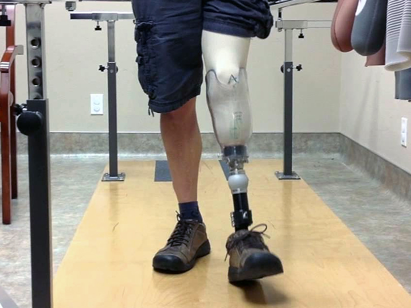
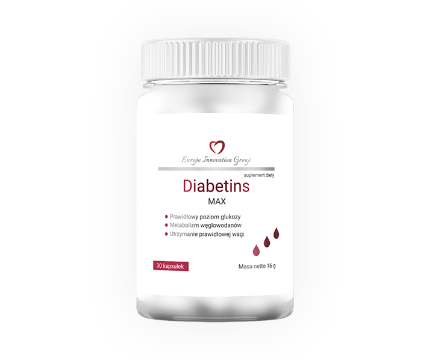

Według Światowej Organizacji Zdrowia cukrzyca jest jedną z głównych przyczyn przedwczesnej śmiertelności na świecie.
Według oficjalnych statystyk na świecie żyje obecnie ponad 425 milionów osób chorych na cukrzycę. Jednak według ocen endokrynologów rzeczywista liczba jest dwa razy większa. Wielu diabetyków nawet nie domyśla się o swojej chorobie.
Czy można na zawsze pozbyć się diagnozy „cukrzyca”? Naczelny lekarz Instytutu Diabetologii Barbara Krupa odpowiedziała na to i inne ważne pytania.
- Pani Mario, rozczarowujące statystyki wskazują, że liczba chorych na cukrzycę typu 2 stale rośnie. Z czym jest to związane i jakie są przyczyny choroby?
- Wcześniej cukrzycę typu 2 słusznie nazywano cukrzycą osób otyłych lub starszych. Głównymi czynnikami rozwoju tej choroby są otyłość, siedzący tryb życia, wiek i predyspozycje genetyczne.
Epidemia cukrzycy, że tak powiem, jest bezpośrednio związana z epidemią otyłości. Nadwaga wpływa na funkcjonowanie przewodu pokarmowego, a w szczególności funkcjonowanie trzustki, która produkuje hormon ważny dla rozkładu cukrów - insulinę.
- Czy są jakieś oznaki, które powinny zaniepokoić pacjenta i służyć jako powód do skontaktowania się z endokrynologiem?
- Tak, takie objawy istnieją. Niestety są skutkiem znacznego wzrosty cukru we krwi. Należą do nich: suchość w ustach, pragnienie, szybkie oddawanie moczu, osłabienie.
Objawy te mogą pojawić się już wiele lat po wystąpieniu choroby. Małe skoki cukru we krwi mogą się nie objawiać, ale takie warunki mogą prowadzić do poważnych powikłań naczyniowych cukrzycy przez kilka lat.
Dlatego osoby z grupy ryzyka - powyżej 40 roku życia i z nadwagą - powinny być regularnie diagnozowane przez endokrynologa.
Większość diabetyków nie wyobraża sobie całej ciężkości tej choroby. Powiedz nam, jak cukrzyca wpływa na narządy wewnętrzne, jakie są jej konsekwencje?-
- Cukrzyca ma destrukcyjny wpływ na wszystkie narządy wewnętrzne i układy człowieka. Faktem jest, że nasze naczynia nie są zaprojektowane do pompowania „słodkiej” krwi: glukoza uszkadza małe naczynia nerek i oczu, stopniowo prowadząc do niewydolności nerek i całkowitej utraty wzroku.
Ryzyko miażdżycy naczyń mózgowych i tętnic serca wzrasta wielokrotnie. A uszkodzenie naczyń obecnych w nogach ostatecznie prowadzi do zgorzeli i amputacji kończyn.
- Czy istnieje sposób, aby całkowicie wyleczyć cukrzycę?
- W ciągu ostatnich kilku lat nasz instytut wraz z dużą firmą farmaceutyczną zajmował się opracowaniem najnowszego produktu do leczenia cukrzycy typu 2 i 1. Środek otrzymał nazwę .
W tej chwili jest to najbardziej skuteczny środek, który nie ma analogów.
- Jak działa ?
- Wzmaga wydzielanie insuliny, zwiększa wrażliwość organizmu na ten hormon, zmniejszając oporność na insulinę. Ponadto zakłóca wchłanianie węglowodanów w jelicie.
Zażywanie u zapewnia całkowite przywrócenie funkcji trzustki. W rezultacie zaczyna wytwarzać wystarczającą ilość insuliny bez wsparcia farmakologicznego.
- Czy po zastosowaniu u organizm jest całkowicie regenerowany?
- Tak. Wszystkie powikłania cukrzycy są również wyeliminowane: oczyszcza naczynia krwionośne z płytek cholesterolowych, usuwa nadciśnienie, zapewnia prawidłowe odżywianie układu nerwowego. Pomaga zmniejszyć wagę poprzez neutralizację najczęstszej przyczyny choroby - otyłości. Zmniejsza apetyt na słodycze.
Co jest godne uwagi: tylko składniki roślinne wchodzą do składu preparatu. W rezultacie nie ma absolutnie żadnych negatywnych konsekwencji dla organizmu.

- Gdzie mogę kupić ?
- jest sprzedawany w aptekach, ale trudno będzie go znaleźć: jest to nowy środek, dlatego jest dość rzadko spotykany. Dlatego firma produkcyjna stworzyła stronę internetową, na której można zamówić po koszcie produkcji, bez dodatkowych opłat.
- Pani Mario, dziękuję za wyczerpujący wywiad. Myślę, że pomogła pani wielu naszym czytelnikom.
Od redakcji: formularz, przez który można kupić po koszcie produkcji, załączamy poniżej.
Moja mama ma cukrzycę od 15 lat. Zamówiłam jej , chcę, żeby w końcu zaczęła żyć życie zdrowego człowieka
Jestem także cukrzykiem. Jestem strasznie zmęczona niekończącymi się zastrzykami i ograniczeniami ... Zamówiłem, czekam
Dziękuję bardzo za środek!
Moja babcia miała całą masę chorób, a rok temu, zdiagnozowali u mnie także cukrzycę. Bardzo się martwiła z tego powodu, płakała, bała się powikłań, amputacji i uzależnienia od insuliny. Było dla nas, wnuków, bardzo trudne i gorzkie patrzenie na to. Więc bardzo dziękuję za ten środek i artykuł, dzięki któremu dowiedzieliśmy się o nim. Moja babcia już rozpoczęła leczenie, mówi, że czuje się znacznie lepiej po pierwszym użyciu
Zawsze byłem oburzony z tego, że lekarze szukają lekarstw na raka, AIDS - jest to dobrze znane wszystkim. Ale leki na cukrzycę, myślałem, nie interesują naszych farmaceutów. Natknąłem się na państwa artykuł przez przypadek, ale jestem bardzo zadowolony z wiadomości o ie. Mój ojciec jest cukrzykiem, zamówiłem dla niego kilka paczek od razu
Słuchajcie, czy ktoś już otrzymał przesyłkę? Jak długo czekaliście?
Dostarczono mi drugiego dnia po zamówieniu
Mam zaledwie 45 lat a już jestem cukrzykiem. Dopóki nie siedzę na insulinie, ale wciąż biorę dużo leków każdego dnia, staram się przestrzegać surowej diety (co jest bardzo trudne), ale skoki cukru wciąż zdarzają się dość często. Moje ręce drętwieją tak bardzo, że ledwo mogę dotknąć palcami klawiszy komputera (jestem programistą). Ta choroba naprawdę przeszkadza mi w życiu. Dali mi państwo nadzieję na pełnowartościowe życie. Zostawiłem prośbę na państwa stronie, chcę rozpocząć kuracje wkrótce
Zamówiłam, naprawdę chcę wkrótce rozpocząć stosowanie
Również jestem cukrzykiem z doświadczeniem. Mam dość walki z chorobą. Naprawdę mam nadzieję na państwa kapsułki